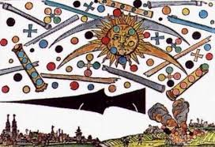
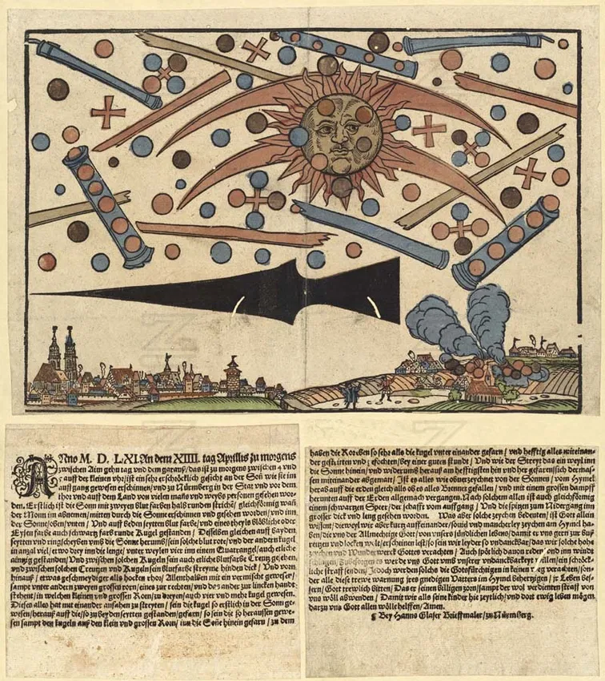
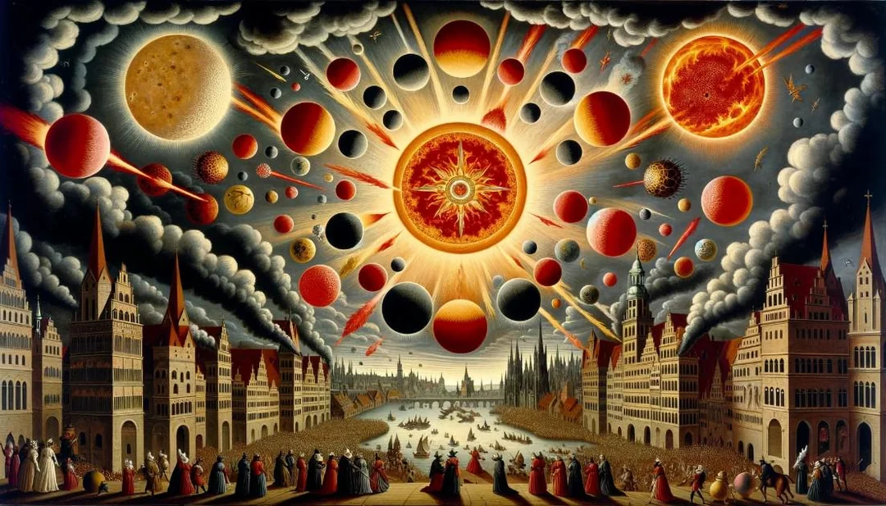
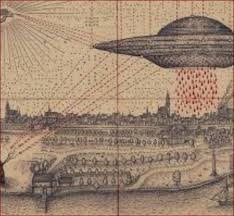
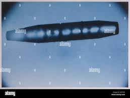
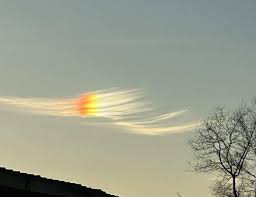
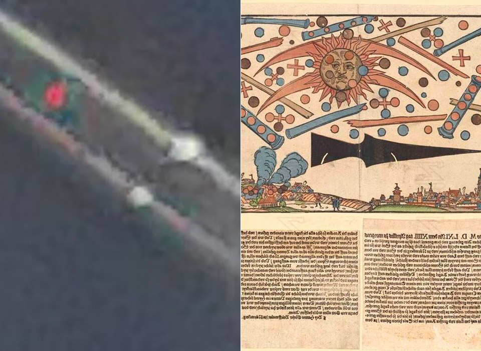

NUREMBERG 1561

Introduction
The Nuremberg phenomenon of 1561 (Celestial Phenomenon over Nuremberg) is one of the most famous celestial phenomena recorded in European history in the sixteenth century, and is often compared to r Basel 1566 . It occurred on April 14, 1561, over the city of Nuremberg in Germany (which was then a Free Imperial City within the Holy Roman Empire).

As the sun rose on April 14, 1561, over the German city of Nuremberg, residents witnessed what they described as a kind of "aerial battle" taking place within a brilliant glare—featuring the erratic dance of orbs, crosses, and cylinders. This was followed by the appearance of a large, mysterious black arrow-shaped object, concluding with a crash-landing on the outskirts of the city. Later that month, local artist Hans Glaser produced a broadsheet featuring a woodcut engraving of the scene and a detailed description of what was observed. The text reads as follows:
In the year 1561, on the morning of April 14th, between dawn and shortly after, around four or five o'clock, a terrifying vision appeared on the rising sun, seen by many men and women in Nuremberg, at the city gate, and in the surrounding countryside. First, two blood-red arcs appeared with the sun, like the moon in its last quarter, above and below, glittering like the sun, with blood-red colors on either side. All around the sun were numerous spheres, bluish, iron-colored, or black. Other blood-red spheres were formed in circles on either side of the sun. Still others appeared in rows of three, others in rows of four. Between these were blood-red crosses. And between all these spheres and crosses, blood-red streaks were visible in the background. Intermingled with this vision were flexible, hollow cylinders. There were also three large cylinders, one on the left, one on the right, and a third above them all. And within these cylinders were four or more spheres. All of these began to fight among themselves: it is reported that the spheres first entered the sun and then emerged to collide with one another; the large cylinders began firing at each other with the spheres. For a good hour, all of this fought violently and struggled until its strength was exhausted, rising and falling before the sun. Finally, as has been reported, all the objects fell toward the earth, as if they wanted to set everything ablaze, and finally fell to the ground in a great updraft of vapor and dissolved. After this spectacle, it is said that something like a large, broad, black spearhead appeared in the sky, its shaft pointing east and its point west. But what all these signs mean, God alone knows. But since we have recently witnessed so many different signs appearing in the heavens, signs that Almighty God has caused to appear—as if He wanted us to repent for our sinful lives—we are so ungrateful that we neglect such signs and wonders, joking about them and ignoring them. It is to be feared that God will inflict a terrible punishment upon us for our ingratitude. However, those who fear God will not neglect Him at all, and all of them will faithfully heed the warning of their merciful Father, improve their lives, and serve God with joy so that He may turn away His wrath and the deserved punishment from us. So that we, as His children, may live here for a time and there for eternity.May God help us. Amen. By Hans Glaser, sign painter in Nuremberg.
History
As the sun rose over the German city of Nuremberg on that morning, residents witnessed what they described as a spectacular "aerial battle" taking place within the solar glare. The spectacle featured an erratic dance of orbs, crosses, and cylinders, topped by the appearance of a large, mysterious black arrow-shaped object. The event reportedly concluded with a "crash-landing" somewhere beyond the city limits. Later that month, local artist Hans Glaser produced a broadsheet featuring a woodcut engraving of the scene, accompanied by a detailed description of the eyewitness accounts.
In the early hours of April 14, 1561, specifically between 4:00 and 5:00 AM, the residents of Nuremberg witnessed a "frightful spectacle" manifesting upon the sun. Crowds of men and women, both within the city walls and in the surrounding countryside, saw an unprecedented sight: two blood-red arcs appeared in the middle of the sun, resembling the moon in its last quarter. These arcs served as the initial spark of what would later escalate into a grand celestial battle, instilling a sense of terror and religious awe in all who beheld them.
Following the appearance of the arcs, the sun began to "emit" strange and astonishing objects: globes of red, black, orange, and bluish-white hues emerged, along with crosses and cylindrical shapes resembling tubes. These objects were not stationary; they engaged in what appeared to the residents as a "violent fight." They darted to and fro with great speed, clashing with one another, while some disintegrated into plumes of smoke. The sky transformed into a cosmic battlefield, unfolding directly above the terrified populace.
After about an hour of intense aerial combat, a large black triangular or spear-shaped object emerged, appearing to dominate the entire celestial stage. As the confrontation reached its climax, several of the "exhausted" spheres began to plummet toward the earth, engulfed in thick plumes of smoke. Witnesses described them as burning or exploding before finally dissolving into vapor and vanishing. This dramatic conclusion left the citizens of Nuremberg in utter awe, wondering if they had witnessed a war between heavenly hosts or a dire omen of the apocalypse.
Theories
To those at the time, the event carried religious significance, interpreted as an omen or divine warning. Today, historians and scientists offer alternative explanations, from atmospheric optical illusions (such as sun dogs) to the misinterpretation of natural celestial events.
Reynolds takes exception, especially regarding the Nuremberg broadsheet, pointing to the "smoke billowing" in the lower right-hand corner, which he interprets as "the wrath of God, afflicting either Luther’s heresy or the Church’s vivid rebuttal." He also questions the prominent black spearhead pointing left over the city: "A spear? Or some kind of Germanic weather icon...?" However, I argue that Reynolds is mistaken on two counts. First, the original text accompanying the illustration specifically refers to "globes, which were first in the sun," suggesting they were perceived as physical objects emerging from a celestial body rather than purely metaphorical religious icons.
flew back and forth among themselves and fought vehemently with each other for over an hour. And when the conflict in and again out of the sun was most intense, they became fatigued to such an extent that they all, as said above, fell from the sun down upon the earth ‘as if they all burned’ and they then wasted away on the earth with immense smoke.“After all this there was something like a black spear, very long and thick, sighted; the shaft pointed to the east, the point pointed west”

Hans Glaser concludes his documentation of the 1561 event with a profound theological message, transforming the cosmic incident into a clarion call for moral reform. Glaser perceives these "signs" not merely as a display of power, but as an invitation from the "Merciful Father" to mend one's soul before the onset of divine punishment. In his view, ingratitude and mockery of such miracles are the true threats to society, whereas salvation lies in taking these sightings as a "heartfelt warning" that leads to a life of righteousness and piety, securing peace in this world and eternity in the next.
The Nuremberg event was not an isolated incident but part of a series of reports detailing similar aerial battles across Europe during the Middle Ages and the 16th century. A notable example is the 1551 broadsheet by Leonhardt Kellner, published a decade before Glaser’s account. These reports were consistently embellished with metaphors from the biblical "Book of Revelation." The Church found these "imaginative works" to be an ideal tool for instilling profound awe and fear in the populace, ensuring their devotion and submission through the provocative imagery of divine wrath.

The documentation of such events followed a consistent pattern through the "Airship" waves and into the modern era. While artistic renderings based on eyewitness accounts may lack technical precision, this does not justify dismissing the core content of the testimonies, which remain remarkably consistent over centuries. It is plausible that artists like Hans Glaser conducted interviews and drew preliminary sketches based on direct sightings. Comparing the 16th-century events in Nuremberg and Basel with the 1950 Farmington sightings reveals strikingly similar movement patterns and object shapes. These correlations reinforce the idea of a persistent physical phenomenon rather than isolated hallucinations.
It is said to be an "air battle" between advanced civilizations, with the balls representing "small ships", the cylinders "mother ships", and the black shape "observer ship" or "crash". This interpretation began to spread in the 20th century with the UFO movement.
Description
In the morning of April 14, 1561, at daybreak, between 4 and 5 a.m., a dreadful apparition occurred on the sun, and then this was seen in Nuremberg in the city, before the gates and in the country – by many men and women. At first there appeared in the middle of the sun two blood-red semi-circular arcs, just like the moon in its last quarter. And in the sun, above and below and on both sides, the color was blood, there stood a round ball of partly dull, partly black ferrous color. Likewise there stood on both sides and as a torus about the sun such blood-red ones and other balls in large number, about three in a line and four in a square, also some alone. In between these globes there were visible a few blood-red crosses, between which there were blood-red strips, becoming thicker to the rear and in the front malleable like the rods of reed-grass, which were intermingled, among them two big rods, one on the right, the other to the left, and within the small and big rods there were three, also four and more globes. These all started to fight among themselves, so that the globes, which were first in the sun, flew out to the ones standing on both sides, thereafter, the globes standing outside the sun, in the small and large rods, flew into the sun. Besides the globes flew back and forth among themselves and fought vehemently with each other for over an hour. And when the conflict in and again out of the sun was most intense, they became fatigued to such an extent that they all, as said above, fell from the sun down upon the earth ‘as if they all burned’ and they then wasted away on the earth with immense smoke. After all this there was something like a black spear, very long and thick, sighted; the shaft pointed to the east, the point pointed west. Whatever such signs mean, God alone knows. Although we have seen, shortly one after another, many kinds of signs on the heaven, which are sent to us by the almighty God, to bring us to repentance, we still are, unfortunately, so ungrateful that we despise such high signs and miracles of God. Or we speak of them with ridicule and discard them to the wind, in order that God may send us a frightening punishment on account of our ungratefulness. After all, the God-fearing will by no means discard these signs, but will take it to heart as a warning of their merciful Father in heaven, will mend their lives and faithfully beg God, that He may avert His wrath, including the well-deserved punishment, on us, so that we may temporarily here and perpetually there, live as his children. For it, may God grant us his help, Amen. By Hanns Glaser, letter-painter of Nurnberg.
Globes
The Nuremberg phenomenon of 1561 manifested as a complex visual spectacle, featuring celestial bodies in contrasting hues of blood-red, black, orange, and bluish-white. These objects were far from stationary, characterized by violent dynamic movement; they emerged directly from the sun or issued from massive cylinders, engaging in rapid back-and-forth maneuvers. The objects collided in what appeared to witnesses as a "violent battle" lasting over an hour, reaching a climax as some plummeted toward the earth as if "exhausted" from the struggle, ending in thick smoke and explosions before finally dissolving into vapor.
.jpg)
There is a striking resemblance between the 1561 historical descriptions and the "Orbs" found in modern UFO reports—spherical lights often described as possessing artificial intelligence or performing non-physical maneuvers. Furthermore, the shapes rendered by Glaser (spheres with lines or intersections) immediately evoke the imagery of the iconic "TIE Fighters" from the Star Wars saga. It makes the 16th-century spectacle appear as though a science fiction film were projected onto the sky centuries before the invention of cinema.
Crosses
Alongside the spheres and cylinders, more complex geometric formations emerged in the sky: blood-red crosses, often appearing with spheres or circles attached to the ends of their arms. Others appeared as blood-red strips that thickened over time, resembling sturdy reed-grass rods. These crosses and strips maneuvered alongside the globes, participating in the violent "battle" that engulfed the horizon. In that era, these shapes were not perceived as mechanical objects but were interpreted as terrifying divine signs (Prodigies), intended to instill awe and drive the populace toward sincere repentance.
In modern interpretations of the 1561 event, observers are moving away from traditional theology toward technological explanations. These "crosses" are now viewed as mechanical entities, advanced weaponry, or spacecraft. Some draw parallels to the iconic "X-wing" fighters from Star Wars, where the split-wing configuration forms a cross-like silhouette. Furthermore, some hypothesize that these geometric shapes are not arbitrary but functional symbols of advanced civilizations utilizing "Sacred Geometry" or physical designs based on perfect symmetry to achieve cosmic propulsion systems beyond our current understanding.
Cylinders or Tubes
Massive, elongated cylindrical objects emerged in the Nuremberg sky, described as resembling dark tubes or long barrels. These objects were not merely static elements but played a pivotal role in the "battle"; smaller spheres were seen issuing and "discharging" from within them to join the violent confrontation. These giant cylinders maneuvered back and forth across the horizon, forming a core part of the dramatic spectacle involving hundreds of objects—interpreted at the time as terrifying celestial engines of war.

According to this analytical perspective, the cylinders are not merely optical phenomena but massive "Motherships" designed to carry and deploy smaller "scout ships" or spherical combat units (the Orbs). Based on this interpretation, what Hans Glaser described as a "battle" was, in fact, a cosmic war waged between advanced extraterrestrial civilizations or different technological factions. These entities utilized the Nuremberg skies as a theater for their confrontation, leaving the local populace to interpret this high-tech clash through the only religious and symbolic language available to them at the time.
There is a remarkable structural correlation between the descriptions recorded by Hans Glaser in 1561 and the UFO reports from the mid-20th century (1940–1950), specifically regarding Cigar-shaped UFOs. What the people of Nuremberg described as "tubes" or "long barrels" emitting spheres is identical to the modern description of "cigar ships," which are frequently observed deploying swarms of smaller orbs. This cross-century consistency suggests a phenomenon with a stable technical and physical pattern, where only the terminology has evolved to reflect the technological context of the era.
Long Black Shape
Following the violent battle between the spheres and cylinders and the subsequent crash of several objects amidst smoke, a colossal black object appeared in the sky. Long, thick, and resembling a spearhead or a giant arrow, its geometry leaned toward a triangular shape. The "shaft" of this object pointed toward the East, while its sharp tip was directed toward the West. Unlike the other entities, this object was not described as having rapid movement; instead, it stood in a terrifying, silent fixity, serving as the ultimate sign that concluded the celestial display. In the context of the era, it was interpreted as definitive proof of divine wrath, driving the populace into a state of collective dread and calls for repentance.
In the printed broadsheet documented by Hans Glaser, a mysterious element stands out at the end of the visual narrative: a large, elongated black object. This entity appears horizontally or at an angle, distinctly separated from the clashing globes and cylinders. Most notably is its timing; it emerges only after the "tumult" or celestial battle has subsided, acting as a final omen or a massive black "period" placed at the end of a line of cosmic chaos, leaving the observer in a state of silent dread and anticipation.

Science offers a compelling natural explanation for the "Black Spearhead": it may have been crepuscular rays or long, dark shadows appearing at dawn. This phenomenon occurs when high-altitude clouds obstruct sunlight while the sun is still low on the horizon, casting vast triangular shadows across the sky. Remarkably, the "East-West" orientation mentioned by Glaser perfectly aligns with the sun's path at that moment, strengthening the hypothesis that this "spear" was an optical shadow play created by the interaction of sunrise and cloud formations rather than a solid physical object.

It is said to be an "air battle" between advanced civilizations, with the balls representing "small ships", the cylinders "mother ships", and the black shape "observer ship" or "crash". This interpretation began to spread in the 20th century with the UFO movement.
Research
Researchers and observers emphasize the role of Hans Glaser, the contemporary narrator and publisher of the event, asserting that the existence of a printed source from the 16th century lends this account a unique historical "credibility." During that era, printing was not merely a means of disseminating news; it was a tool for documenting "truth," transforming oral rumors into tangible historical records. The survival of this broadsheet through the centuries, with its intricate visual and textual details, establishes the Nuremberg event as an extraordinary case of early documentation for atmospheric phenomena that continue to spark debate today.
The most scientifically accepted explanation for the Nuremberg event is a complex interplay of atmospheric optics. Researchers suggest that the residents witnessed Sun Dogs (Parhelia) or Solar Halos, caused by the refraction of sunlight through ice crystals in high-altitude clouds. This refraction can generate various geometric shapes, including circles, crosses, and light pillars. A combination of these halos, specific cloud formations, and the presence of dust or smoke particles likely created the optical illusion of "tubes" and "globes" clashing in the sky, driven by shifting light angles and atmospheric winds.
Some ideological analysts say that behind these imaginary images of air battles, we find that Nuremberg (1561) was a Protestant, Lutheran city par excellence. The famous artist Albrecht Dürer, a son of Nuremberg and a supporter of Protestantism, played a pivotal role in creating catastrophic images inspired by the “Revelation of John,” depicting heavenly conflicts between the armies of good and evil. Likewise, Basel (1566) was a Protestant city at that time. Therefore, it can be assumed that these tracts were written under the direction of the Protestant authorities in the two cities; As a religious “propaganda” tool aimed at urging readers to increase piety and religious commitment by exploiting atmospheric dread.